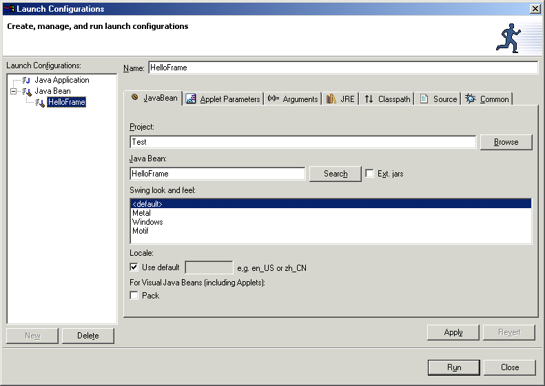

The Java bean launcher creates a virtual machine, and its class path is the same as the Java Build Path for the project. The Java bean is then instantiated using its null constructor. If the Java bean is visual, i.e. is a subclass of java.awt.Component, then an appropriate window is created to host the visual Java bean. The window is a java.awt.Dialog if the bean is part of or inherits from an AWT Java bean. The window is a javax.swing.JDialog if the bean is or inherits from a Swing class. If the visual Java bean does not require a window because it itself is one, then no window is created although the Java bean will be made visible and given a default size after it has been instantiated. For example, a class that inherited from javax.swing.JFrame,.
There are a number of options that can be set when you use the Java bean launcher. To configure these options, open the Launch Configurations window using the Run > Run menu option. Each existing configuration is shown in the list beneath its launcher type. You can specify details for the configuration by selecting it and using the notebook pages for each set of configuration options.

For a Java bean configuration each tab lets you specify different details. The most commonly used options are on the JavaBean tab including the name of the Java bean to test, and the Search button brings up a list of all available Java classes in the project.
The Locale and the selected Swing look and feel are used by the virtual machine created and allow you to test the Java bean for different runtime scenarios. If the Java bean is visual then it is given the size based on the value it returns from public Dimension getSize(). Alternatively you can select the Pack checkbox and the Java bean will be sent the pack() method after being opened. The pack is used for Java beans that are themselves windows such as frames or dialogs, as well as the window created to host visual components.
The tab pages for Arguments, JRE, Classpath, Source and Common need not normally be visited. These let you control precisely how the virtual machine for the launcher is started, the defaults of which are set from the properties of the Java project.
Related concepts
Visual Editor for Java
Related tasks
Testing applets